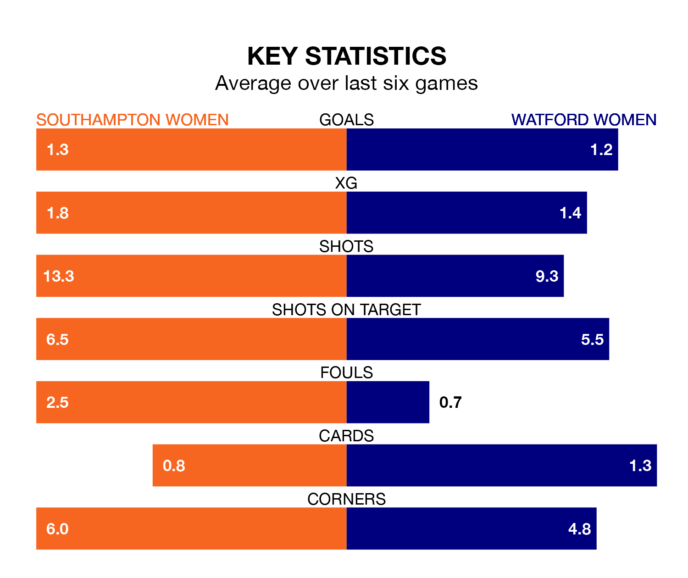

Watford Women come to St. Mary's to play Southampton Women on early Sunday in terrible form, having collected just two points from their last six games.
The visitors have drawn two and lost four of their last six fixtures, while the Saints have three wins and three losses.
Watford are bottom of the table after 12 games, of which they have won one and drawn three, earning six points.
Southampton are seven places ahead of the visitors in fifth, with seven wins and five losses putting them on 21 points.
With 21 goals in 12 games so far this season, the Saints are the league's third-highest scorers with 1.8 goals per game. And they are conceding fewer than average, letting in 15 goals at a rate of 1.2 per game.
Watford, meanwhile, are below average scorers, with 1.2 goals per game, compared to a league average of 1.4. They have conceded 2.2 goals per game.
In Carly Johns, Watford have one of the league's most on-form strikers so far this season. She has notched five goals in 12 appearances, to sit fifth in the scoring charts.
The home team's top scorers, with four goals each, are Sophia Pharoah, Katie Wilkinson and Molly Pike.
Southampton's last match was on December 17, a 1-0 loss against Durham Women.
Watford drew 3-3 with London City Lionesses last time out, also on December 17, with Michelle Agyemang (two) and Paige Culver (own goal) on the scoresheet.
Updated: 15:34, 08/01/24